Rome
Rome is the capital city of Italy. It is also the capital of the Lazio region, the centre of the Metropolitan City of Rome, and a special comune named Comune di Roma Capitale. With 2,860,009 residents in 1,285 km2 (496.1 sq mi), Rome is the country's most populated comune and the third most populous city in the European Union by population within city limits. The Metropolitan City of Rome, with a population of 4,355,725 residents, is the most populous metropolitan city in Italy. Its metropolitan area is the third-most populous within Italy. Rome is located in the central-western portion of the Italian Peninsula, within Lazio (Latium), along the shores of the Tiber... Continue reading on Wikipedia
MOMUMENTS
My favorite monuments in Rome

Fontana Trevi
The Trevi Fountain (Italian: Fontana di Trevi) is an 18th-century fountain in the Trevi district in Rome, Italy, designed by Italian architect Nicola Salvi and completed by Giuseppe Pannini and several others. Standing 26.3 metres (86 ft) high and 49.15 metres (161.3 ft) wide,[1] it is the largest Baroque fountain in the city and one of the most famous fountains in the world. Read more on Wikipedia
Learn more
Il Colosseo
The Colosseum is an elliptical amphitheatre in the centre of the city of Rome, Italy, just east of the Roman Forum. It is the largest ancient amphitheatre ever built, and is still the largest standing amphitheatre in the world, despite its age. Construction began under the emperor Vespasian in 72 and was completed in 80 AD under his successor and heir, Titus. Read more on Wikipedia
Learn moreForo Romano
The Roman Forum, also known by its Latin name Forum Romanum (Italian: Foro Romano), is a rectangular forum (plaza) surrounded by the ruins of several important ancient government buildings at the center of the city of Rome. Citizens of the ancient city referred to this space, originally a marketplace, as the Forum Magnum, or simply the Forum. Read more on Wikipedia
Learn morePHOTO GALLERY FROM ROME
 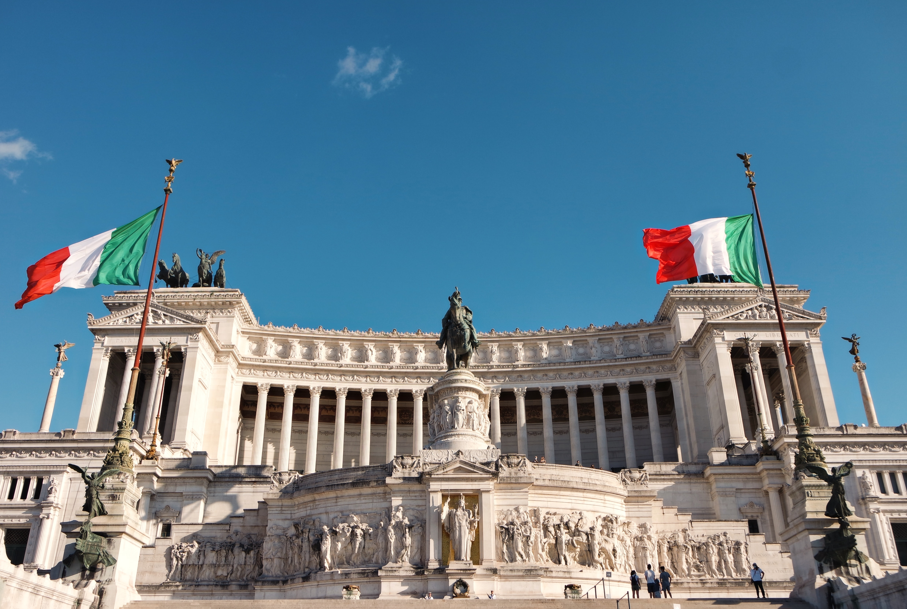
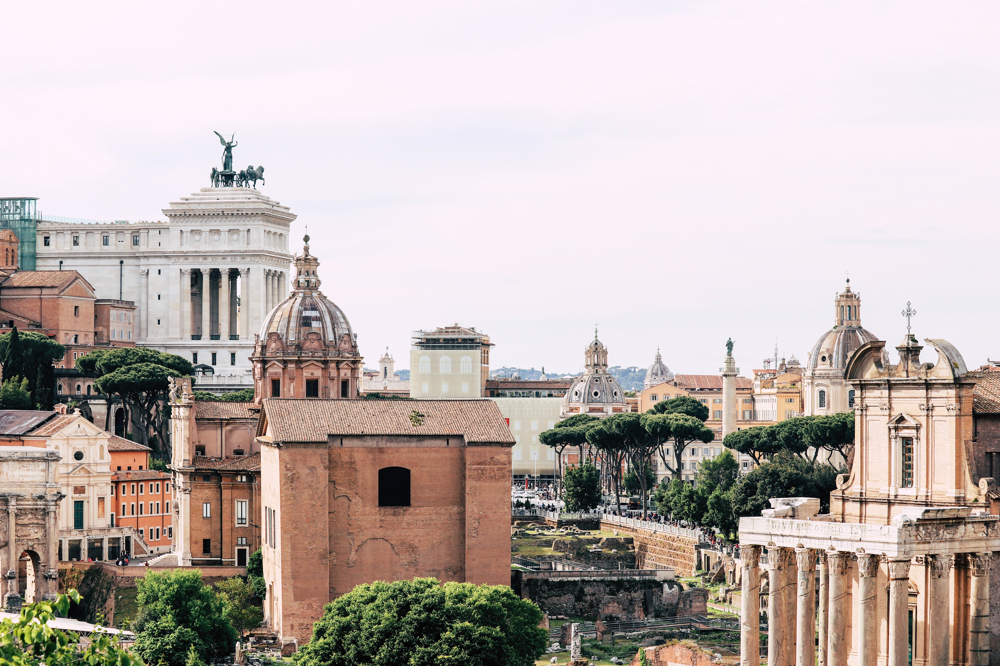
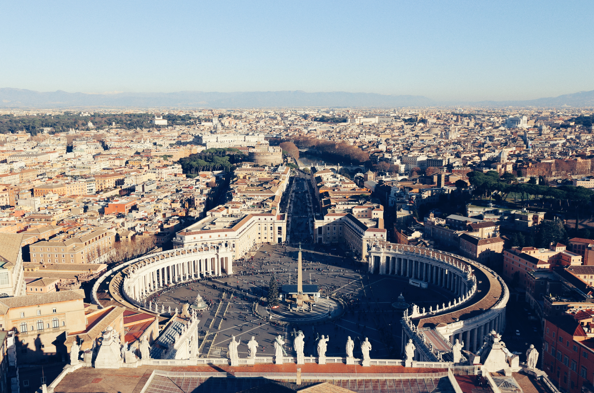
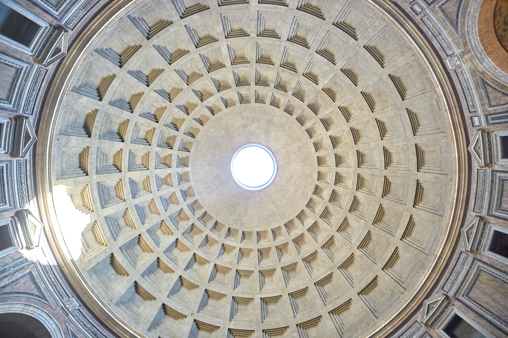
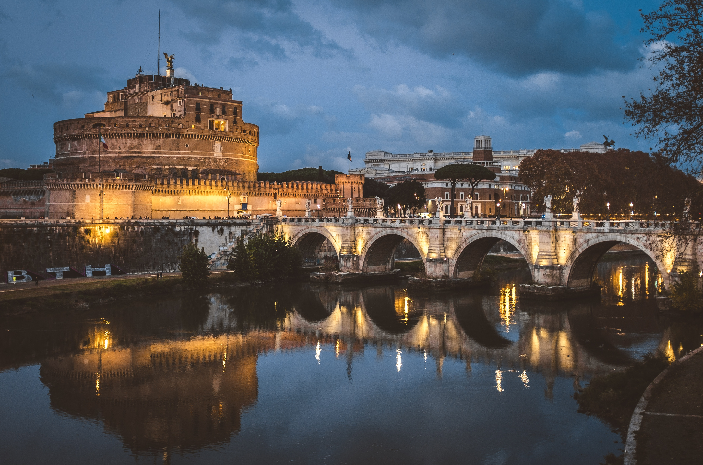
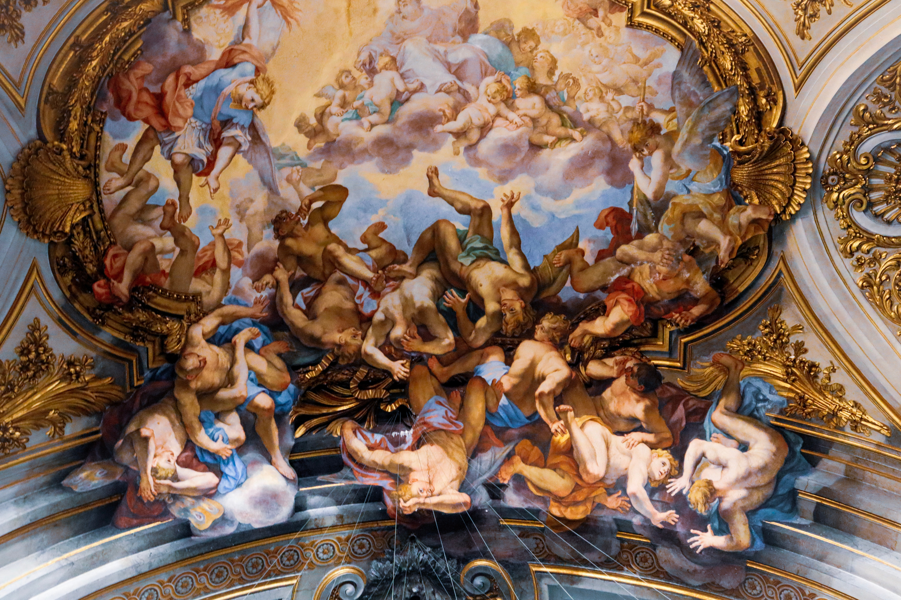
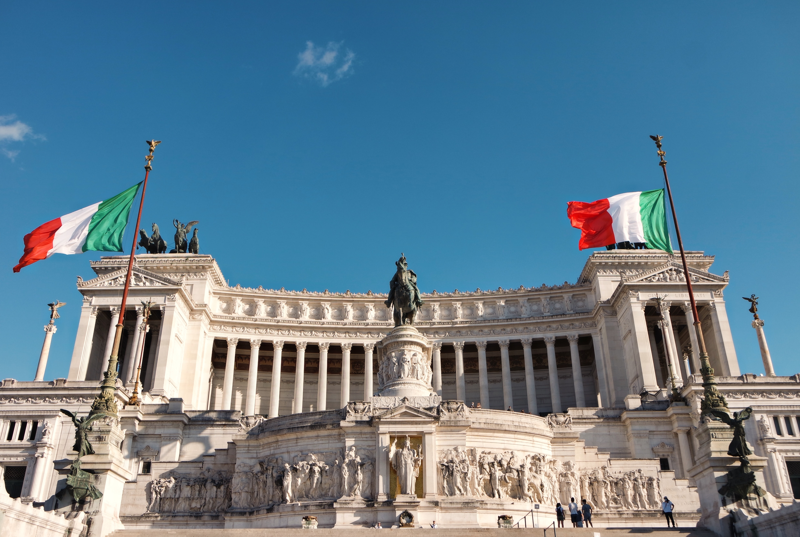
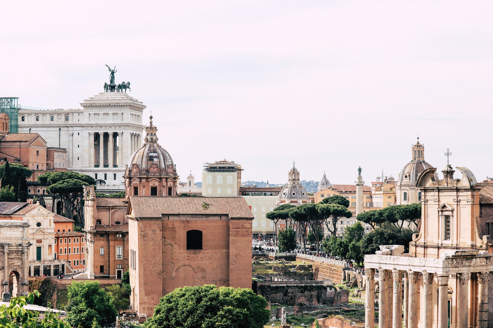
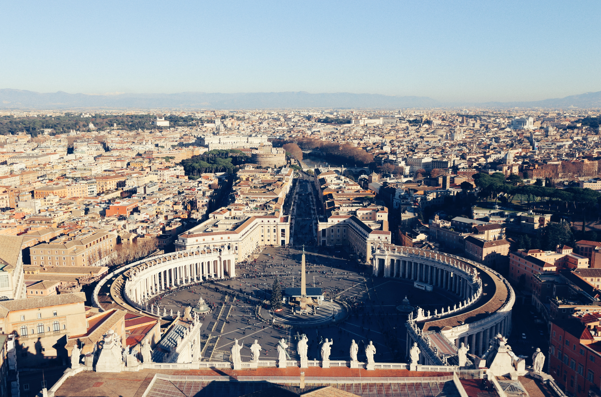
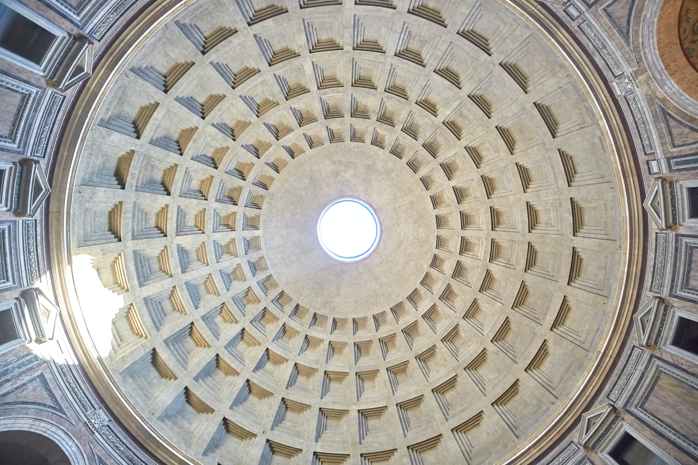
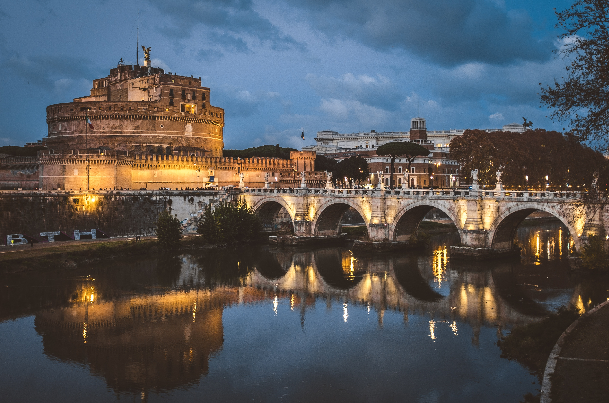
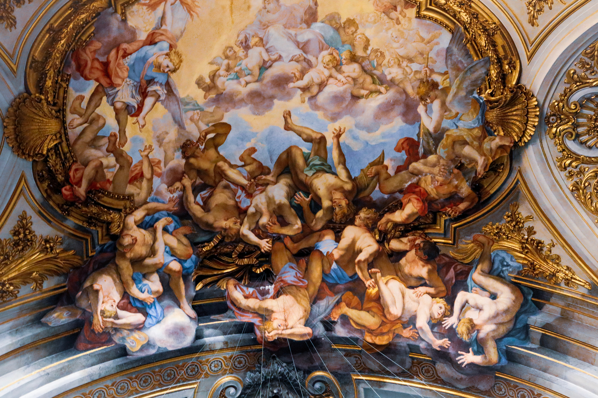